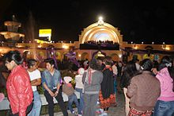

Huehuetenango es un departamento rico en costumbres y tradiciones, ya que posee la mayor cantidad de municipios, cuyos pobladores son herederos directos del pueblo maya.
Posee sus propios grupos de danza tradicional, en que los bailadores representan escenas de la vida diaria, ritos alusivos a la fecha o acontecimientos especiales que van acompañados, la mayoría de las veces, de bandas musicales y de su instrumento de batalla: la marimba, de la cual son especialistas y la que en las fiestas no puede faltar.
Una peculiar tradición consiste en lo que es conocido como la "tradicional serenata huehueteca" o "Serenata del día de los santos" que se da la noche del miércoles santo y la noche del 31 de octubre, víspera del Día de Todos los Santos. Esta tradición es única en el país y en ambas tanto el parque central como en otras zonas de la cabecera (Cementerio general, la rotonda zona 1), en donde se puede disfrutar sabrosos platillos de comida típica: ponche, atol, tamales, enchiladas, los dulces de horno que son únicos en la gastronomía guatemalteca y propios de Huehuetenango, tortillas con carne de carnero o res y con chorizo o longanizas, entre otros, que le dan a esa noche un toque de riqueza y delicias gastronómicas, pero sobre todo la presentación de artistas a interpretar canciones, de diversos géneros musicales: boleros, música en marimba con melodías escritas por compositores huehuetecos y otros, la mayoría en música de antaño de recuerdo, algunas contemporáneas, siempre relacionadas al amor y conquista. La afluencia de personas en ambas es enorme, y los enamorados aprovechan la madrugada para llevar serenata a sus amadas siendo una tradición única y muy especial. Para los enamorados, la "serenata huehueteca" es una tradición que resalta y que se celebra a cada año junto a las autoridades departamentales.
El día de la serenata dura aproximadamente 12 horas, es un día en que muchas familias tienen la oportunidad de unirse y compartir aquellos memorables momentos que se vivieron al lado del ser querido ausente o revivir aquellas aventuras llenas de emoción por conquistar a la mujer amada, en noches de escape se sentía la emoción de estar al pie del balcón interpretando canciones románticas, y ella toda con nervios sintiéndose especial al escuchar en la penumbra de la noche la voz de su amado.25
Debido a su riqueza cultural, la tradición huehueteca se basa más en la palabra que en el documento escrito. Los consejos de ancianos poseen un valor trascendental, pues se consideran personas de profunda sabiduría, con experiencia para guiar la vida de la comunidad.
Aunque la mayoría de los indígenas son cristianos católicos, no han abandonado sus costumbres tradicionales, como lo demuestra la existencia de cofradías como las organizaciones civiles donde los dirigentes de las comunidades son los Principales, o sea aquellas personas que han sobresalido y alcanzado un status superior, por los servicios que durante muchos años han prestado tanto en la municipalidad como en las cofradías, haciéndose merecedores al respeto y obediencia

esto de la población.